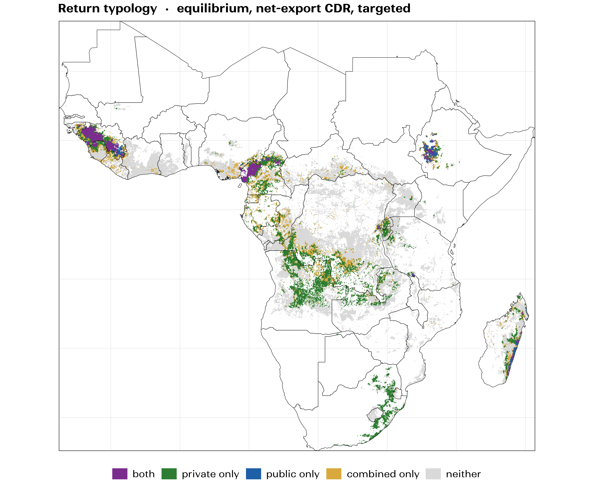
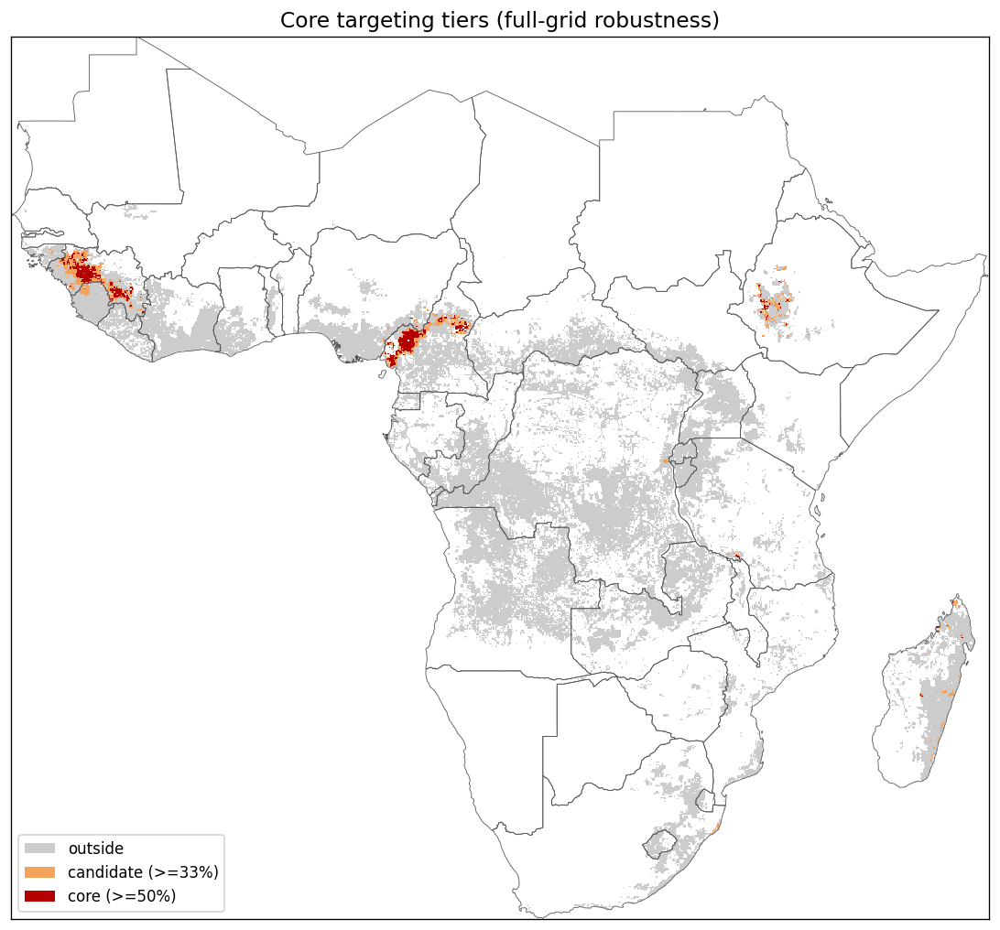

An evolving, spatially explicit model of where spreading crushed basalt on acid cropland might pay farmers, the climate, or both together. Everything shown here is a draft: we keep revising the model as better data and evidence become available, and several elements still need research in geochemistry, yield response, and markets and economics.
Geochemistry and yield-benefit modelling; comparison with their cost and MRV tools.
Weathering geochemistry and carbon accounting; assumptions checked against the Yale-led 2026 review.
Yield-benefit modelling, drawing on their smallholder deployments.

Crushed basalt acts like agricultural lime, raising yields on acid soils, and it also removes carbon dioxide that could be sold as a credit. For every patch of cropland the model asks which of these benefits would cover the full cost of the rock, using public soil, crop, climate, geology, road and price data.
In the current draft, land where yield alone pays is larger than land where carbon alone pays, and a substantial area appears viable only when the two are combined. If this holds up, carbon finance would be acting as a cost-share that unlocks a yield investment smallholders cannot otherwise afford, with the yield gain staying on the farm.
How to read it. The pattern is more trustworthy than any number on the map. The absolute areas move every time we update an input, and several inputs are still uncertain (next slides).
Green: yield pays alone · blue: carbon pays alone · purple: both · gold: only together · grey: neither. Draft, subject to revision.
Use the best available data at each step and be explicit about what is assumed. Every constant in the model is catalogued with its source, and every result carries a range rather than a point.
They have moved with every revision and will move again. The qualitative ordering (yield case larger than carbon case; a meaningful combined-only area) has been stable so far, but we present it as a hypothesis to test, not a finding.
Sensitivity runs so far suggest the carbon-removal rate per tonne is the input the results are most sensitive to, and the yield response the least; both remain open.

Fold in new trial data and partner input; run the trial-anchored yield model; align the carbon accounting with what credit registries require; keep the model, code and maps open so others can reproduce and challenge them; and complete the draft paper.
Multi-year field measurements of carbon removal in tropical smallholder soils; real quarry, grinding and trucking costs near candidate rock sources; and farm-level evidence on yield, adoption and who can pay. The map (red and orange, mainly the Cameroon and Guinea highlands) suggests where such measurements would be most informative, though that suggestion is itself a draft.
National soil and agricultural research institutes in the candidate countries; a credit registry to co-design accounting; project developers and buyers willing to share deployment and monitoring data; and rock suppliers near the candidate sources.